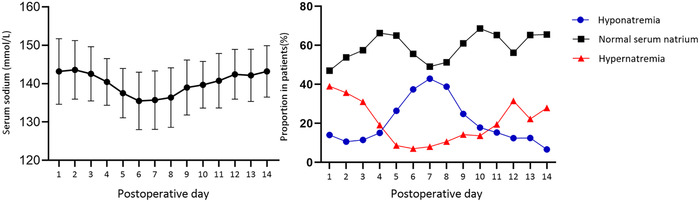
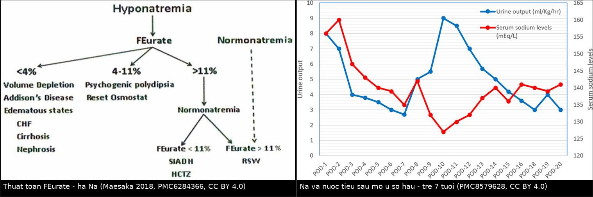
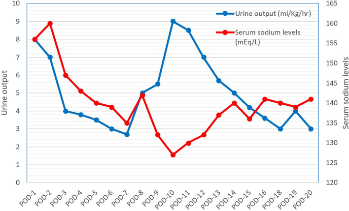
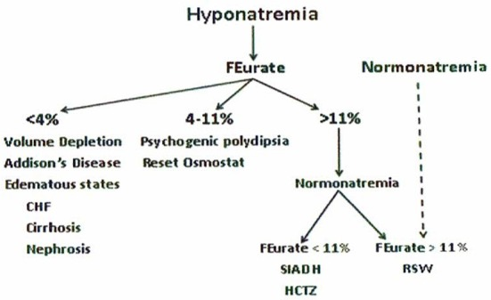
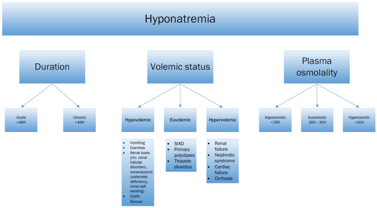

1755 — Hạ natri máu sau mổ u vùng trên yên ở trẻ: SIADH hay mất muối não / Postoperative hyponatremia in children: SIADH versus cerebral salt wasting
Tags: pattern:ha-natri-mau pattern:siadh pattern:csws pattern:da-nieu vung:tuyen-yen vung:nao protocol:dien-giai-na protocol:MRI-tuyen-yen score:feurate incidentaloma:khong
Mức chắc chắn (certainty): tổng hợp y văn (literature synthesis) — 1 đoàn hệ lớn hồi cứu 202 trẻ mổ u sọ hầu có biểu đồ Na theo ngày (Brain Behav 2024, PMC10909694, CC BY 4.0), 1 ca nguyên văn trẻ 7 tuổi vừa ĐTĐ nhạt vừa mất muối não sau mổ u sọ hầu có ảnh đường cong Na/nước tiểu (BMC Pediatr 2021, PMC8579628, CC BY 4.0), 1 bài tổng quan cơ chế với thuật toán FEurate (Front Med 2018, PMC6284366, CC BY 4.0), 1 tổng quan nhi khoa 2026 về Na–nước (J Clin Med 2026, PMC12841650, CC BY 4.0) và 1 tổng quan điều trị hạ Na (J Clin Med 2026, PMC13705694, CC BY 4.0). Không có ca nguyên văn do nhóm tự viết; ca trong quiz là ca có ảnh từ bài gốc, ghi rõ PMCID.
Câu chốt: hạ natri máu sau mổ vùng trên yên không phải một bệnh mà là hai trạng thái ngược nhau trên cùng một bệnh nhân: SIADH (nước dư, thể tích bình thường → hạn chế dịch) và mất muối não (muối mất thật, thể tích giảm → truyền muối + bù dịch). Điều trị sai hướng làm nặng thêm rối loạn. Ba con số phải thuộc: hạ Na gặp ở 72,8% trẻ mổ u sọ hầu trong 14 ngày đầu, đáy trung bình 135,5 mmol/L vào ngày 6, và 57,4% có kiểu ba pha (tăng → giảm → tăng). Vì vậy đo Na mỗi 6–12 giờ trong 2 tuần, chứ không phải "đo khi có triệu chứng".
1. Tổng quan bệnh học – cơ chế hình ảnh
1.1 Bệnh học và dịch tễ
- Vùng mổ quyết định rối loạn: u sọ hầu (craniopharyngioma) trẻ nằm sát cuống yên, thùy sau yên và sàn não thất III; phẫu tích u cắt ngang sợi trục tiết ADH đang chạy từ nhân trên thị/nhân cạnh não thất xuống thùy sau → mất kiểm soát phóng thích ADH theo từng đợt, không theo áp lực thẩm thấu.
- Tần suất (đoàn hệ 202 trẻ, 2 trung tâm, 2018–2019): trong 14 ngày sau mổ, tăng Na 66,3%, hạ Na 72,8%; thể nặng (Na > 150 hoặc < 130 mmol/L) lần lượt 37,1% và 40,6%. Tuổi trung bình 8,35 ± 4,35; 91,6% mổ qua đường sọ, 8,4% qua xoang bướm nội soi; 95,1% là u sọ hầu thể răng (adamantinomatous) (PMC10909694).
- Kiểu ba pha (triphasic response) — 57,4% bệnh nhân có kiểu này trên đường cong Na, dù chỉ 15,3% đạt đủ tiêu chuẩn chẩn đoán (ĐTĐ nhạt → hạ Na → ĐTĐ nhạt trở lại) (PMC10909694).
- Hạ Na là biến cố của tuần đầu–tuần thứ hai, không phải ngày đầu: khởi phát trung vị ngày 4 (2–6), kéo dài 3,12 ± 1,99 ngày, đỉnh tần suất ngày 7 (42,9%); trong khi tăng Na khởi phát ngày 1 (1–2) và có hai đỉnh (ngày 1: 39,0%; ngày 12: 31,5%) (PMC10909694).
- Yếu tố nguy cơ hạ Na nặng (đa biến): không có thiếu hụt hormone tuyến yên trước mổ → OR 2,031 (1,027–4,020), p = 0,042; mổ qua đường sọ → OR 5,52 (1,198–25,431), p = 0,028; u nguyên phát OR 2,095 (0,938–4,679), p = 0,071 (xu hướng). Tỉ lệ hạ Na nặng: 44,9% vs 29,1% (không/không có thiếu hụt trước mổ, p = 0,042), 43,2% vs 11,8% (đường sọ vs xoang bướm, p = 0,011), 44,4% vs 25,0% (u nguyên phát vs tái phát, p = 0,025) (PMC10909694).
- Ngưỡng định nghĩa dùng trong đoàn hệ: hạ Na < 135, nặng < 130**; tăng Na **> 145, nặng > 150 mmol/L; ĐTĐ nhạt = nước tiểu > 3 L/m²/ngày + osmolality máu > 300 mOsm/kg + osmolality nước tiểu < 300 mOsm/kg hoặc tỉ trọng < 1,010 (PMC10909694).
1.2 TẠI SAO Na lại tụt — hai cơ chế trái ngược
- SIADH — "nước dư, không phải muối thiếu": ADH gắn thụ thể V2 ở ống góp → tăng AQP2 → tái hấp thu nước tự do → pha loãng Na máu. Tổng Na cơ thể bình thường, thể tích ngoại bào bình thường/không phù. Vì vậy truyền muối đẳng trương không chữa được (muối vào rồi ra theo nước tiểu), còn hạn chế dịch thì chữa được (PMC6284366).
- CSWS — "mất muối thật": sau tổn thương não, giảm trương lực giao cảm và tăng peptide lợi niệu (ANP/BNP/CNP, urodilatin) → ức chế tái hấp thu Na ở ống lượn gần → natriuresis + đa niệu → giảm thể tích ngoại bào → ADH tăng thứ phát vì giảm thể tích (không "inappropriate"). Vì vậy hạn chế dịch làm bệnh nặng lên, còn bù muối + thể tích thì cải thiện (PMC6284366, PMC8556096).
- Vì sao hai thể giống nhau đến vậy: cả hai đều có hạ Na giảm thẩm thấu, nước tiểu cô đặc (Uosm > Posm), Na niệu > 30 mmol/L, hypouricemia và tăng FEurate — tức là 5/5 xét nghiệm "kinh điển" không phân biệt được. Khác biệt duy nhất là thể tích, và thể tích không đo được bằng mắt (PMC6284366).
- Vì sao FEurate phân biệt được: urate được tái hấp thu ở ống lượn gần cùng chỗ với Na. Khi thể tích giảm (CSWS) → tăng tái hấp thu Na và urate → FEurate tăng > 11% và không trở về bình thường sau khi sửa Na. Trong SIADH, FEurate tăng do pha loãng nhưng về < 11% khi Na được sửa. FEurate bình thường 4–11%; < 4% gợi ý giảm thể tích/Addison/phù (PMC6284366).
- Vì sao "Na niệu cao = mất muối" là sai: 10/24 bệnh nhân mất muối thận trong loạt 62 người có Na niệu < 20 mmol/L; ngược lại, SIADH khi ăn nhạt cũng có Na niệu thấp. Na niệu không dùng một mình để phân biệt (PMC6284366).
- Vì sao phải sửa Na chậm: não thích nghi bằng cách mất osmolyte nội bào trong 24–48 giờ; sửa quá nhanh → phù tế bào não thoáng qua rồi hủy myelin cầu (ODS). Giới hạn: ≤ 8–10 mmol/L/24 giờ và ≤ 18 mmol/L/48 giờ ở hạ Na mạn; nếu có triệu chứng nặng thì nâng 4–6 mmol/L trước để cắt cơn co giật (PMC13705694). Ở trẻ, tổng quan nhi khoa dùng 6–8 mmol/L/ngày (PMC12841650).
1.3 Ngưỡng định lượng trụ cột
| Đại lượng | Con số | Nguồn |
|---|---|---|
| Hạ Na sau mổ u sọ hầu ở trẻ (14 ngày) | 72,8% hạ Na; 40,6% Na < 130; 66,3% tăng Na | PMC10909694 |
| Đường cong Na trung bình | đỉnh ngày 2: 143,6 ± 7,6; đáy ngày 6: 135,5 ± 7,5; đỉnh ngày 14: 143,2 ± 6,7 mmol/L | PMC10909694 |
| Kiểu ba pha | 57,4% có kiểu; 15,3% đủ tiêu chuẩn | PMC10909694 |
| Thời điểm | hạ Na khởi phát ngày 4 (2–6), kéo dài 3,12 ± 1,99 ngày, đỉnh ngày 7 (42,9%) | PMC10909694 |
| Nguy cơ hạ Na nặng | không thiếu hụt hormone trước mổ OR 2,031; đường sọ OR 5,52 | PMC10909694 |
| FEurate | bình thường 4–11%; > 11% sau sửa Na = mất muối thận/CSWS; < 11% = SIADH | PMC6284366 |
| Natri niệu | > 30 mmol/L ở cả hai — không phân biệt được; 10/24 ca CSWS có < 20 mmol/L | PMC6284366 |
| Nước tiểu | SIADH: Uosm > 100 mOsm/kg (thường > 300); CSWS: Uosm cao nhưng thể tích nước tiểu nhiều | PMC12841650 |
| Sửa Na an toàn | ≤ 8–10 mmol/L/24 giờ, ≤ 18 mmol/L/48 giờ; trẻ: 6–8 mmol/L/ngày | PMC13705694 · PMC12841650 |
| NaCl 3% khi có triệu chứng | 3–5 mL/kg trong 10–15 phút → nâng 2,5–4 mmol/L | PMC12841650 |
| Công thức thiếu hụt Na | (135 − Na) × 0,6 (nhũ nhi 0,7) × cân nặng + nhu cầu 1–2 mmol/kg/ngày | PMC12841650 |
| Fludrocortisone trong CSWS | 0,1 mg/ngày (ca trẻ 7 tuổi); có ca 50 → 150 µg/ngày | PMC8579628 · PMC8556096 |

*Trái: Na trung bình ba pha — đỉnh 143,6 (ngày 2) → đáy 135,5 (ngày 6) → đỉnh 143,2 (ngày 14). Phải: tần suất tăng Na (hai đỉnh: ngày 1 39,0%, ngày 12 31,5%) và hạ Na (một đỉnh ngày 7: 42,9%). Đây là lý do phải đo Na đến ngày 14, không phải chỉ 48 giờ đầu. Ảnh nguyên bản (Brain Behav 2024, PMC10909694, CC BY 4.0).*2. Mẫu hình + chẩn đoán phân biệt theo vị trí (Gamut)
- Hạ Na trong 2 tuần đầu sau mổ vùng trên yên, thể tích bình thường:
- SIADH sau mổ · hội chứng tiết ADH không thích hợp do thuốc (opioid, carbamazepine, SSRI) · suy thượng thận (cortisol thấp → ADH không bị ức chế) · suy giáp · reset osmostat · uống nước quá nhiều do khát tâm lý.
- Hạ Na + đa niệu + dấu hiệu giảm thể tích:
- CSWS · CSWS sau ĐTĐ nhạt (thể xen kẽ — ca 7 tuổi) · lợi niệu do mannitol/thuốc · suy thận mất muối · nôn/tháo tháo · suy thượng thận cấp.
- Hạ Na + nước tiểu cô đặc nhưng không giảm thể tích và FEurate thấp:
- SIADH · reset osmostat · giả hạ Na (protein/lipid máu cao) · tăng đường huyết (hạ Na giả do pha loãng).
- Đường cong Na theo thời gian sau mổ (đọc như "dấu hiệu hình ảnh"):
- Ngày 1–2 tăng Na → ĐTĐ nhạt do mất ADH cấp;
- Ngày 4–10 tụt Na → SIADH (ADH phóng thích từ đầu sợi trục thoái hóa) hoặc CSWS (thể tích giảm);
- Ngày 12–14 tăng Na lại → ĐTĐ nhạt vĩnh viễn (PMC10909694).
- Theo vị trí tổn thương trên MRI: cuống yên bị cắt → nguy cơ ĐTĐ nhạt + ba pha cao nhất; sàn não thất III/thể vú → kèm hội chứng dưới đồi (béo phì, mất khát — bài 1754); tuyến yên còn lại bình thường → nguy cơ hạ Na nặng cao hơn (OR 2,031) vì trục còn phản ứng được (PMC10909694).
3. Bảng so sánh phân biệt (ma trận đối chiếu)
| Thực thể (entity) | Hình ảnh/lâm sàng điển hình | Chốt vào (rule-in) | Chốt loại (rule-out) | Gợi ý xác nhận |
|---|---|---|---|---|
| SIADH sau mổ (bài này) | Hạ Na ngày 4–10; cân nặng không giảm, không khát, niêm mạc ẩm; nước tiểu cô đặc; thường sau khi đã giảm/ngừng desmopressin | Thể tích bình thường + Uosm > 100 + FEurate về < 11% sau sửa Na + cortisol/TSH bình thường | Đa niệu > 3 mL/kg/giờ + cân nặng giảm + FEurate > 11% kéo dài → không phải SIADH | FEurate; cân nặng 2 lần/ngày; thử hạn chế dịch |
| CSWS (bài này) | Hạ Na kèm đa niệu, khát nhiều, cân nặng giảm, Hct/Hb tăng, nhịp tim nhanh; Na niệu rất cao | Thể tích giảm + Na niệu > 40 mmol/L + FEurate > 11% (kể cả sau khi sửa Na) | Cân nặng ổn định + FEurate < 11% sau sửa Na → không phải CSWS | Siêu âm TM chủ dưới (đường kính < 5 mm gợi ý giảm thể tích) |
| ĐTĐ nhạt trung ương | Đa niệu > 3 L/m²/ngày, Na tăng, Uosm < 300, tỉ trọng < 1,010 | Na > 145 + Uosm thấp + đáp ứng desmopressin | Na thấp → không phải ĐTĐ nhạt đơn thuần | Theo dõi Na–nước tiểu mỗi 6 giờ |
| Suy thượng thận cấp | Hạ Na + tăng K, hạ HA, mệt, hạ đường huyết; có thể không đa niệu | Cortisol sáng thấp + ACTH cao (hoặc không tăng nếu trung ương) | Cortisol bình thường → loại | Cortisol/ACTH; thử hydrocortisone |
| Suy giáp trung ương | Hạ Na nhẹ, chậm chạp, táo bón; FT4 thấp, TSH không tăng | FT4 thấp + TSH thấp/không tăng | FT4 bình thường → loại | FT4/TSH |
| Reset osmostat | Hạ Na ổn định, không triệu chứng, không thay đổi theo dịch; FEurate 4–11% | Na ổn định nhiều tuần + Uosm thay đổi được theo nước | Na dao động mạnh theo ngày → không phải | Theo dõi 1–2 tuần, không điều trị |
| Hạ Na do desmopressin quá liều | Đang dùng desmopressin, giảm đa niệu, cân nặng tăng, Na tụt nhanh trong 24 giờ | Ngừng desmopressin → Na tăng | Na tiếp tục giảm dù đã ngừng → nghĩ CSWS | Ngừng thuốc thử; cân nặng |
| Hạ Na giả (pseudohyponatremia) | Không triệu chứng, osmolality máu bình thường | Osmolality máu bình thường | Osmolality máu thấp → hạ Na thật | Đo osmolality trực tiếp |

*Trái: thuật toán FEurate — hạ Na → FEurate < 4%** (giảm thể tích, Addison, phù) / **4–11%** (uống nhiều tâm lý, reset osmostat) / **> 11% → sau khi sửa Na: < 11% = SIADH**, **> 11% = mất muối thận (CSWS). Phải: đường cong thực tế ở trẻ 7 tuổi sau mổ u sọ hầu — Na 156 mmol/L, nước tiểu 8 mL/kg/giờ (POD1) → hạ Na 127 mmol/L kèm nước tiểu 9 mL/kg/giờ (POD10) rồi hồi phục. Ảnh ghép letterbox, không crop; cả hai nguồn CC BY 4.0 (PMC6284366 Fig. 1; PMC8579628 Fig. 2).*4. Protocol chụp + hệ phân độ/điểm chuẩn hóa
4.1 Theo dõi Na–nước (quan trọng hơn "chụp gì")
- Na máu mỗi 6–12 giờ trong 48 giờ đầu, rồi mỗi 12–24 giờ đến ngày 14 — kể cả khi bệnh nhân không triệu chứng, vì đáy trung bình rơi vào ngày 6 (PMC10909694).
- Nước tiểu 24 giờ hoặc theo giờ khi có đa niệu; cân nặng 1–2 lần/ngày (công cụ rẻ nhất để phân biệt SIADH với CSWS); Hct/Hb (tăng = cô đặc máu = giảm thể tích).
- Cặp xét nghiệm mỗi lần Na tụt: osmolality máu + osmolality nước tiểu + Na niệu + FEurate + cortisol sáng/ACTH + FT4/TSH.
- Tính FEurate:
FEurate (%) = (urate niệu × creatinin máu) / (urate máu × creatinin niệu) × 100. Lấy trước và sau khi sửa Na — giá trị sau mới phân biệt được (PMC6284366).
4.2 MRI vùng trên yên (khi cần giải thích rối loạn kéo dài)
- MRI sọ có gadolinium, lát 1–2 mm: T1W sagittal giữa (cuống yên, thùy sau, sàn não thất III), T2W coronal, T1W sau tiêm sagittal + coronal, DWI.
- Đọc 3 điểm: (1) cuống yên còn hay đã cắt — dự báo ĐTĐ nhạt/ba pha; (2) phần u còn lại và màng não; (3) sàn não thất III/thể vú — nếu tổn thương → kèm hội chứng dưới đồi (bài 1754).
- Không dùng MRI để chẩn đoán SIADH/CSWS — MRI chỉ giải thích cơ chế và loại trừ tái phát u/giãn não thất gây nôn và hạ Na.
4.3 Thuật toán xử trí
- Bước 1 — xác nhận hạ Na thật: osmolality máu < 275 mOsm/kg; loại giả hạ Na.
- Bước 2 — đánh giá thể tích: cân nặng so với trước mổ, Hct/Hb, khát, niêm mạc, nhịp tim, siêu âm TM chủ dưới.
- Bước 3 — FEurate (và cortisol/FT4 để loại suy thượng thận/suy giáp).
- SIADH: hạn chế dịch 50–70% nhu cầu; nếu Na < 125 hoặc có co giật → NaCl 3% 3–5 mL/kg rồi tính lại; không dùng NaCl 0,9% đơn thuần (có thể làm Na tụt tiếp); xem xét urea hoặc tolvaptan ở ca khó (chuyên khoa).
- CSWS: bù thể tích bằng NaCl 0,9% + NaCl 3% nếu có triệu chứng; fludrocortisone 0,1 mg/ngày (có ca 50–150 µg/ngày); theo dõi Na niệu để chỉnh liều; không hạn chế dịch.
- Luôn tuyến tính hóa tốc độ sửa: đặt mục tiêu +6 đến +8 mmol/L/24 giờ, kiểm tra lại sau mỗi 4–6 giờ; nếu vượt 10 mmol/L/24 giờ → truyền desmopressin + dịch nhược trương để hạ lại (PMC13705694).
- Khi có cả ĐTĐ nhạt và CSWS: không tăng desmopressin khi Na đang giảm — đây là bẫy chết người trong ca 7 tuổi (PMC8579628).
flowchart TD
A[Tre sau mo vung tren yen<br/>Na tut trong 14 ngay] --> B[Osmolality mau duoi 275<br/>loai gia ha Na]
B --> C[Can nang - Hct - khat - nhip tim<br/>danh gia the tich]
C --> D{The tich giam?<br/>can nang giam - Hct tang - da nieu}
D -->|Co| E[Do Na nieu va FEurate]
D -->|Khong| F[Do Na nieu va FEurate]
E --> G{FEurate tren 11 phan tram<br/>sau khi sua Na?}
F --> G
G -->|Co| H[CSWS: bu NaCl 0-9 phan tram<br/>NaCl 3 phan tram neu co trieu chung<br/>fludrocortisone 0-1 mg/ngay]
G -->|Khong| I[SIADH: han che dich 50-70 phan tram<br/>NaCl 3 phan tram neu Na duoi 125]
H --> J[Theo doi Na moi 4-6 gio<br/>muc tieu tang 6-8 mmol/L/24 gio]
I --> J
J --> K{Vuot 10 mmol/L/24 gio?}
K -->|Co| L[Desmopressin + dich nhuoc truong<br/>ha Na lai]
K -->|Khong| M[Tiep tuc theo doi den ngay 14<br/>kiem tra cortisol va FT4]
5. Biến thể bình thường và cạm bẫy
- "Na niệu cao là mất muối" — sai: Na niệu > 30 mmol/L ở cả SIADH và CSWS; 10/24 ca mất muối thận có Na niệu < 20 mmol/L (PMC6284366). Chỉ dựa vào Na niệu sẽ truyền muối cho bệnh nhân SIADH.
- "Cân nặng không đổi nghĩa là không mất muối": cân nặng có thể bị che bởi dịch truyền duy trì; phải so với cân nặng trước mổ và nhìn Hct/Hb (tăng = cô đặc) (PMC8579628).
- Bẫy desmopressin: ở trẻ vừa ĐTĐ nhạt, đa niệu tái xuất hiện dễ bị hiểu là "thiếu desmopressin" và tăng liều — trong khi Na đang 127 và đa niệu là do CSWS. Ca 7 tuổi: ngừng desmopressin, truyền NaCl 3%, fludrocortisone 0,1 mg/ngày → Na về bình thường (PMC8579628).
- Bẫy "đo Na một lần là đủ": đáy Na ở ngày 6, đỉnh tăng Na thứ hai ở ngày 12–14; xuất viện sớm mà không hẹn đo Na là bỏ sót (PMC10909694).
- Bẫy "u nguyên phát ít nguy cơ": thực tế u nguyên phát có hạ Na nặng 44,4% so với 25,0% ở u tái phát (p = 0,025) — vì trục còn phản ứng (PMC10909694).
- Bẫy "mổ nội soi an toàn tuyệt đối": hạ Na nặng 11,8% sau xoang bướm so với 43,2% sau mở sọ — nhưng 11,8% vẫn không nhỏ; vẫn phải theo dõi như nhau (PMC10909694).
- Bẫy sửa Na quá nhanh: hạ Na mạn + sửa > 10 mmol/L/24 giờ → ODS; nếu đã vượt, hạ Na lại bằng desmopressin + dịch nhược trương chứ không "chờ xem" (PMC13705694).
- Đừng quên suy thượng thận: cortisol thấp gây hạ Na và làm ADH không bị ức chế; nếu chỉ hạn chế dịch mà không thay cortisol thì Na không lên (PMC12841650).
6. Tự lượng giá — Blind Quiz ngay trên trang tĩnh
Ca 1 — Trẻ 7 tuổi, u sọ hầu 3 × 2 × 0,5 cm, cắt u + hy sinh cuống yên. Đường cong Na và nước tiểu sau mổ.

- Gợi ý lâm sàng: POD1 đa niệu 8 mL/kg/giờ, Na 156 mmol/L, Uosm 175 mOsm/kg → dùng desmopressin. POD10: li bì, Na 127 mmol/L, nước tiểu 9 mL/kg/giờ.
- Câu hỏi: (1) POD1 là chẩn đoán gì? (2) POD10 Na 127 mà nước tiểu vẫn nhiều — SIADH hay CSWS? (3) Dấu hiệu nào trên xét nghiệm chốt chẩn đoán?
Bấm để hiện đáp án (findings + chẩn đoán)
- POD1–2: ĐTĐ nhạt trung ương — Na 156 → 160, Uosm 175, nước tiểu 8 → 7 mL/kg/giờ; đáp ứng desmopressin.
- POD9–10: CSWS, không phải SIADH — Na 132 → 127, nhưng nước tiểu 9 mL/kg/giờ, Na niệu 218 mmol/L (trong khi Na máu 127), Hct/Hb tăng (cô đặc máu = giảm thể tích), plasma osm 261, Uosm 615. SIADH điển hình giảm nước tiểu và không cô đặc máu.
- Điều trị: ngừng desmopressin, NaCl 3% bolus rồi truyền, fludrocortisone 0,1 mg/ngày; Na về bình thường, Uosm 300, Na niệu 25 mmol/L; sau đó khởi động lại desmopressin vì đa niệu do ĐTĐ nhạt.
- Bài học: đa niệu không đồng nghĩa thiếu desmopressin; phải nhìn Na + Hct trước khi tăng liều.
- Nguồn ảnh: BMC Pediatrics 2021, Fig. 2 — PMC8579628, CC BY 4.0 (nguyên bản, không chỉnh sửa).
Ca 2 — Thuật toán FEurate: ba bệnh nhân hạ Na, ba hướng điều trị khác nhau.

- Gợi ý lâm sàng: (A) FEurate 2%; (B) FEurate 7%, Na ổn định nhiều tuần, không triệu chứng; (C) FEurate 14% lúc hạ Na và 12% sau khi sửa Na.
- Câu hỏi: Mỗi bệnh nhân thuộc nhóm nào? Ai cần hạn chế dịch, ai cần bù muối?
Bấm để hiện đáp án (findings + chẩn đoán)
- (A) < 4% → giảm thể tích thật / Addison / phù — tìm nguyên nhân mất dịch ngoài thận hoặc suy thượng thận.
- (B) 4–11% → uống nhiều tâm lý hoặc reset osmostat — không hạn chế dịch, không truyền muối; theo dõi.
- (C) > 11% cả trước và sau sửa Na → mất muối thận/CSWS → bù muối + thể tích.
- Ngược lại, nếu FEurate 14% lúc hạ Na nhưng < 11% sau sửa → SIADH → hạn chế dịch.
- Nguồn ảnh: Frontiers in Medicine 2018, Fig. 1 — PMC6284366, CC BY 4.0 (nguyên bản, không chỉnh sửa).
Ca 3 — Phân loại hạ Na theo thời gian, thể tích và osmolality: đặt bệnh nhân vào đúng ô.

- Gợi ý lâm sàng: trẻ sau mổ 36 giờ, Na 128, co giật; một trẻ khác Na 128 nhưng tỉnh, biết từ 10 ngày trước.
- Câu hỏi: Hai trẻ khác nhau ở trục nào? Điều này thay đổi tốc độ sửa Na thế nào?
Bấm để hiện đáp án (findings + chẩn đoán)
- Trục thời gian: cấp < 48 giờ** (nguy cơ phù não, cần nâng **4–6 mmol/L** ngay) vs **mạn > 48 giờ (nguy cơ ODS, sửa 6–8 mmol/L/24 giờ).
- Trục thể tích: giảm (CSWS, nôn, lợi niệu) / bình thường (SIADH, uống nhiều, reset osmostat) / tăng (suy tim, xơ gan, thận) — quyết định bù hay hạn chế dịch.
- Trục osmolality: < 285** = hạ Na thật; **285–300** = giả hạ Na; **> 300 = hạ Na do tăng đường huyết/mannitol.
- Trẻ co giật: NaCl 3% 3–5 mL/kg trong 10–15 phút; sau đó tính lại và giữ ≤ 8–10 mmol/L/24 giờ.
- Nguồn ảnh: Journal of Clinical Medicine 2026, Fig. 4 — PMC12841650, CC BY 4.0 (nguyên bản, không chỉnh sửa).
Bài liên quan chéo
- 600 – Tổng quan Hệ Nhi khoa
- 1754 – Hội chứng dưới đồi ở trẻ (mất khát, béo phì, rối loạn điều nhiệt sau cùng tổn thương)
- 1751 – LCH vùng dưới đồi–tuyến yên ở trẻ (ĐTĐ nhạt + cuống yên dày)
- 1753 – Viêm tuyến yên–cuống yên tăng sinh lympho ở trẻ
- 1731 – U mầm nội sọ vùng trên yên ở trẻ
- 1710 – Đái tháo nhạt trung ương sau mổ tuyến yên
- 1644 – Đái tháo nhạt trung ương ở trẻ
- 092 – Suy thượng thận & suy tuyến yên quanh mổ (hạ Na do cortisol thấp)
Ảnh
1755_csws_sodium-uo_PMC8579628-F2.jpg— đường cong Na và nước tiểu sau mổ u sọ hầu (ĐTĐ nhạt → CSWS).1755_feurate-algorithm_PMC6284366-F1.jpg— thuật toán FEurate phân biệt SIADH và mất muối thận.1755_sodium-trend_PMC10909694-F2.jpg— Na trung bình theo ngày ở 202 trẻ mổ u sọ hầu (ba pha).1755_hyponatremia-class_PMC12841650-F4.jpg— phân loại hạ Na theo thời gian/thể tích/osmolality.composite_feurate_va_duong-cong-na.jpg— ảnh ghép 2 ô, cả hai nguồn CC BY 4.0.- Nguồn + giấy phép từng ảnh: xem
images/CREDITS.mdvàsources.md.
Không dùng để chẩn đoán độc lập khi chưa có người hướng dẫn.